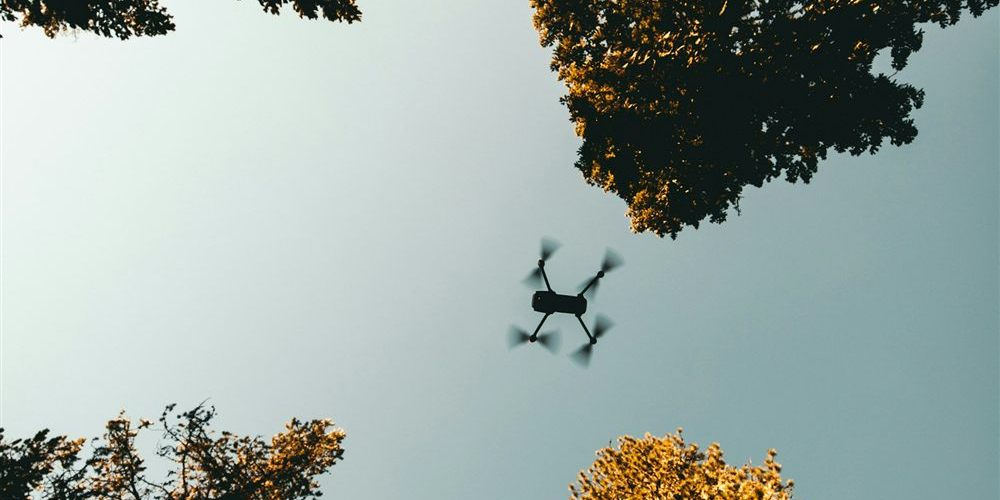

Miksi kiinnostuin tästä harrastuksesta
Tähän tulee myöhemmin oma tarina siitä, miten löysin harrastuksen.
Ensimmäisen persoonan drone-lentäminen: kamera droneen, kuva suoraan laseihin.

FPV eli First Person View tarkoittaa lentämistä droonin kameran näkökulmasta. Kuva lähetetään droonista suoraan FPV-laseihin tai näyttöön reaaliajassa, mikä tekee lentämisestä hyvin immersiivistä.
Tähän tulee myöhemmin oma tarina siitä, miten löysin harrastuksen.